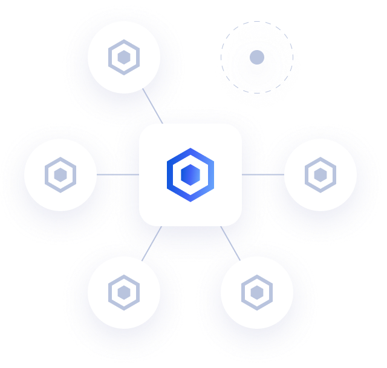
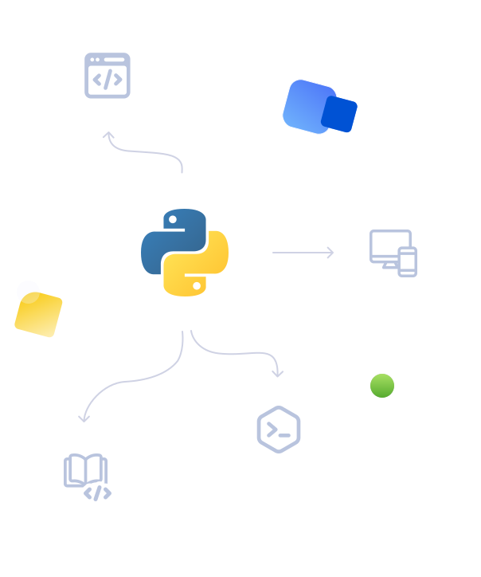

Kafka Streams for Low Code Environments
KSML is...

Low code stream processing
Write streaming applications using nothing more than YAML and some Python snippets. No Java development or build pipelines necessary.
Easy syntax: what you see is what you stream
The flow of messages is easily read and modified. Inserting operations takes no more than 10 seconds, and your new app runs in under 20.

Python function
libraries at your fingertips
KSML definitions allow Python libraries to be imported, providing a wealth of existing code to be reused in streaming apps.
Create your first KSML app in minutes